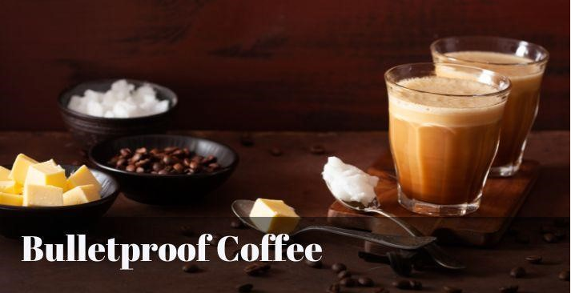
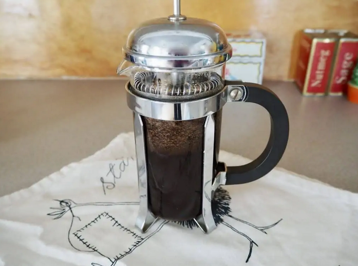
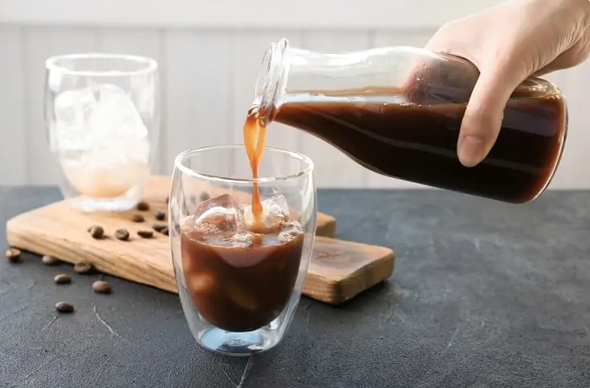
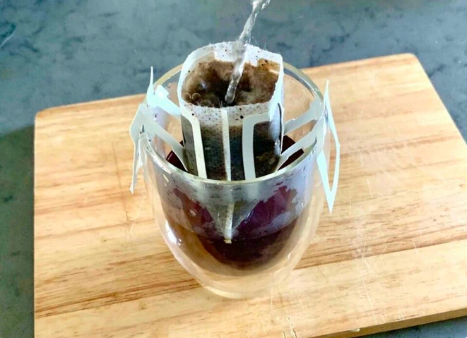

In this page we will talk about the various types of coffee, the history behind it, various brewing methods and health benefits
1. Types of Coffee
1.1 Americano
The Americano is one of the best types of coffee known for its simplicity and intense flavor. It originated during World War II when American soldiers stationed in Italy diluted their espresso with hot water, as they wanted something resembling the black Coffee they used to drink. A caffè Americano is an espresso topped with hot water and can be made in several ways. You can find an Americano at almost any cafe in America and worldwide. An Americano usually smells good, even more than regular coffee. This brewing technique involves adding hot water to a shot of espresso, resulting in a milder, larger beverage. A higher concentration of caffeine in the coffee gives the Americano a fuller-bodied texture and a richer taste.
1.2 Bulletproof Coffee

Bulletproof coffee is a trendy beverage known for its unique ingredients and potential health benefits. It’s made by blending high-quality coffee with grass-fed butter and MCT (medium-chain triglyceride) oil. The concept behind bulletproof coffee is to provide sustained energy and mental clarity throughout the day. Grass-fed butter adds richness and creaminess to the coffee while providing essential fats. MCT oil, derived from coconut oil, contains medium-chain triglycerides rapidly converted into energy by the body. Together, these ingredients create a frothy and indulgent coffee drink with a smooth texture and satisfying flavor. Bulletproof coffee enthusiasts claim it helps boost cognitive function, promote weight loss, and increase energy levels. However, consuming it in moderation and as part of a balanced diet is essential to reap its potential benefits.
1.3 Cafe Au Lait

Café au lait is a coffee beverage from France, made with equal parts of strong, hot coffee and steamed milk. The name “Café au Lait” is French for “coffee with milk,” straightforwardly emphasizing its main ingredients.Café au Lait is commonly consumed in the morning and is famous in French cafes and households. The brewing technique involves preparing a robust drip of coffee and then blending it with an equal amount of milk that has been steamed to create a creamy texture. The result is a well-balanced beverage with the richness of coffee complemented by the smoothness of steamed milk.
2. History of Coffee
The history of coffee dates back centuries, first from its origin in Ethiopia and later in Yemen. It was already known in Mecca in the 15th century. Also, in the 15th century, Sufi monasteries in Yemen employed coffee as an aid to concentration during prayers. Coffee later spread to the Levant in the early 16th century; it caused some controversy on whether it was halal in Ottoman and Mamluk society. Coffee arrived in Italy the second half of the 16th century through commercial Mediterranean trade routes, while Central and Eastern Europeans learned of coffee from the Ottomans. By the mid 17th century, it had reached India and the East Indies. Coffeepot (cafetière "campanienne"), part of a service, 1836, hard-paste porcelain, Metropolitan Museum of Art. Coffee houses were established in Western Europe by the late 17th century, especially in Holland, England, and Germany. One of the earliest cultivations of coffee in the New World was when Gabriel de Clieu brought coffee seedlings to Martinique in 1720. These beans later sprouted 18,680 coffee trees which enabled its spread to other Caribbean islands such as Saint-Domingue and also to Mexico. By 1788, Saint-Domingue supplied half the world's coffee.
4. Coffee Brewing
4.1 The French Press

A french press features a cylindrical glass carafe with a mesh filter inside which separates the ground coffee from the hot water. When it’s time to pour and serve, a lever is pushed down which strains and separates the coffee grounds from the brewed coffee, leaving the grounds on the bottom and liquid coffee above the filter. Before brewing with a french press coffee maker, coffee should be ground to a medium or coarse grind to obtain the best flavor possible. This also prevents any grounds from passing through the filter.
4.2 The Cold Brew method

The process for making cold brew coffee is a lot different than standard brewing. First of all, the coffee is steeped in cold or room temperature water instead of hot water. The steeping process itself lasts for an extended period, usually overnight. This style of brewing produces coffee that’s highly concentrated with higher amounts of caffeine than drip coffee.
4.3 Coffee Bags

If you’re looking to make your coffee brewing experience as easy as brewing tea, you may be interested in the coffee bag method. This method uses coffee grounds inside of soft pouches similar to tea bags.